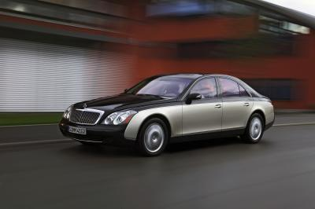

Maybach 57
A symphony of power and style

Luxury, performance, outstanding technology, craftsmanship and individuality.
The Maybach 57 embodies the very same values that made its historic predecessors automotive legends.
The designers and developers at Maybach Manufaktur have set new standards with the facelift carried out in 2010, achieving superlative results in terms of styling and further confirming the Maybach 57’s leading position in the high-end luxury automotive segment.
{kind=link}
Impeccable elegance radiates through the lines of the exterior, proclaiming a vehicle whose self-assured front styling and distinctive, powerful profile combine with the formal clarity of the overall design flawlessly.
Express your own style. The options for personalising your Maybach are almost endless with numerous paint finishes and a choice of wheel designs which offer a wide scope to exhibit your own preferences.
Open the door. Immerse yourself in a world of superlatives.
Drive and relax all at once.
{kind=link}
Crafted from the finest materials, the interior brings together comfort, aesthetic qualities and state-of-the-art technology to create an incomparable driving experience.
With its impressive spaciousness, the Maybach 57 offers an ideal combination of effortless, superior agility for the driver and luxurious comfort for the passengers too.
{kind=link}
Our commitment to create a vehicle which meets your wishes to perfection is reflected by the range of equipment and interior appointments which has been extended once again after the vehicle’s facelift in 2010: sumptuous leathers of the finest quality all in a variety of elegant colours, complemented by trim elements so beautifully crafted that it is almost impossible to resist the urge to touch them.

In addition to featuring luxury appointments and timeless design,
the Maybach 57 is characterised by outstanding engineering and effortlessly premium performance – an exceptional combination
of strengths, even in the high-end luxury segment.
Reduced fuel consumption and emissions in the Maybach facelift
have been added to the pleasure of the driving experience.
An exceptional car – created for true connoisseurs.
{kind=link}
Maybach 57
| No of cylinders/arrangement | 12/V |
| Total displacement (cc) | 5.513 |
| Rated output (kW at rpm) | 405/5.250 |
| Rated torque (Nm at rpm) | 900/2.200–3.000 |
| Acceleration 0–100 km/h (s) | 5.2 |
| Approx. top speed (km/h)* | 250 |
| Tyre size | 275/50 R 19 |
| Fuel | Super Plus unleaded |
| Fuel consumption (l /100 km) combined | 15.0 |
| CO2 emissions (g/km) combined | 350 |
| Emission class | EU5 |
| Tank capacity (l)/incl. reserve | 110/14 |
| Kerb weight (kg) | 2.735 |
| Perm. gross vehicle weight (kg) | 3.260 |
| Boot capacity (max. l) | 605 |
| Drag Cd | 0,31 |